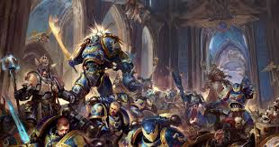

The Imperium of Man is the result of greatest achivements and greatest failures. It consists of 12 subfacions that all serve a purpose.
Imperium of man's forces
-
Astra Militarum
Navis Imperialis
Adeptus Astartes
Adeptus Mechanicus
Collegia Titanica
Militarum Tempestus
Questor Imperialis
Legio Cybernetica
Adepta Sororitas
Adeptus Custodes
Adeptus Arbites
Sisters of Silence
Chaos is the other side of the coin. To fall to chaos is to fall into your worst desires. Some say that those who fell to chaos are the weaker of us. If you ask those of chaos you may find a different answer then you were expecting. Although there are only a few forces of chaos their number is great.
.jpg)
The forces of Chaos
-
Daemons
The Lost and the Damned
Chaos Space Marines
Dark Mechanicum
Zenos is everything in between. Those who arn't of the Impirum nor Chaos. They have their own story and objectives
.jpg)
Other life in the stars
- Leagues of Votann
- Eldar
- Drukhari
- Necrons
- T'au Empire
- Tyranids
- Genestealer Cults
- Orks